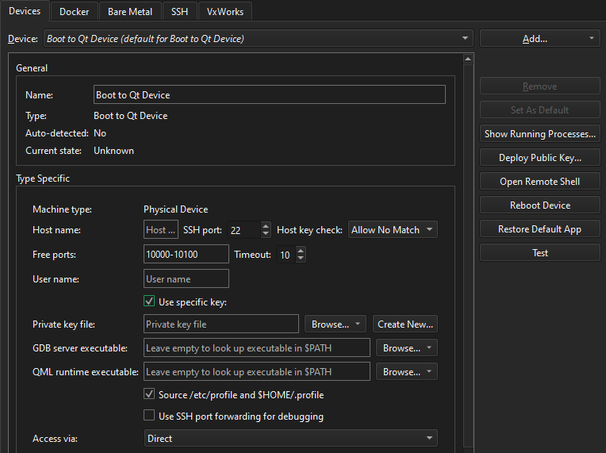
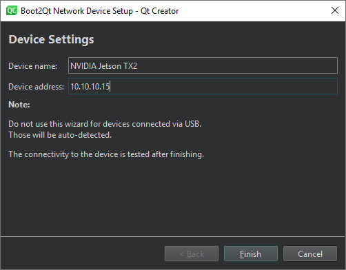

Add Boot to Qt devices
Note: Enable the Boot to Qt plugin to use it.
If Qt Creator does not automatically detect a Boot to Qt device you connect with USB, check that you followed the instructions in the Quick Start Guide for the device.
If that does not help, but you can reach the IP address of the device, create a network connection to it:
- Go to Preferences > Devices > Devices.

- Select Add > Boot2Qt Device to create a network connection to the device.

- In Device name, enter a name for the connection.
- In Device address, enter the host name or IP address of the device. This value becomes the value of the
%{Device:HostAddress}variable. - Select Finish to test the connection and add the device.
The wizard does not show parameters that have sensible default values, such as the SSH port number. It is available in the variable %{Device:SshPort}.
To add a device without using a wizard, select Boot2Qt Device in the pull-down menu of the Add button.
Note: On Ubuntu Linux, the development user account must have access to the plugged-in devices. To grant them access to the device via USB, create a new udev rule, as described in Boot to Qt: Setting Up USB Access to Embedded Devices.
Reboot devices
To reboot the selected device, select Reboot Device.
Restore default applications
To restore the default application to the device, select Restore Default App.
See also Enable and disable plugins, How To: Develop for Boot to Qt, Remote Debugging, Developing for Boot to Qt Devices, and Boot to Qt: Setting Up USB Access to Embedded Devices.